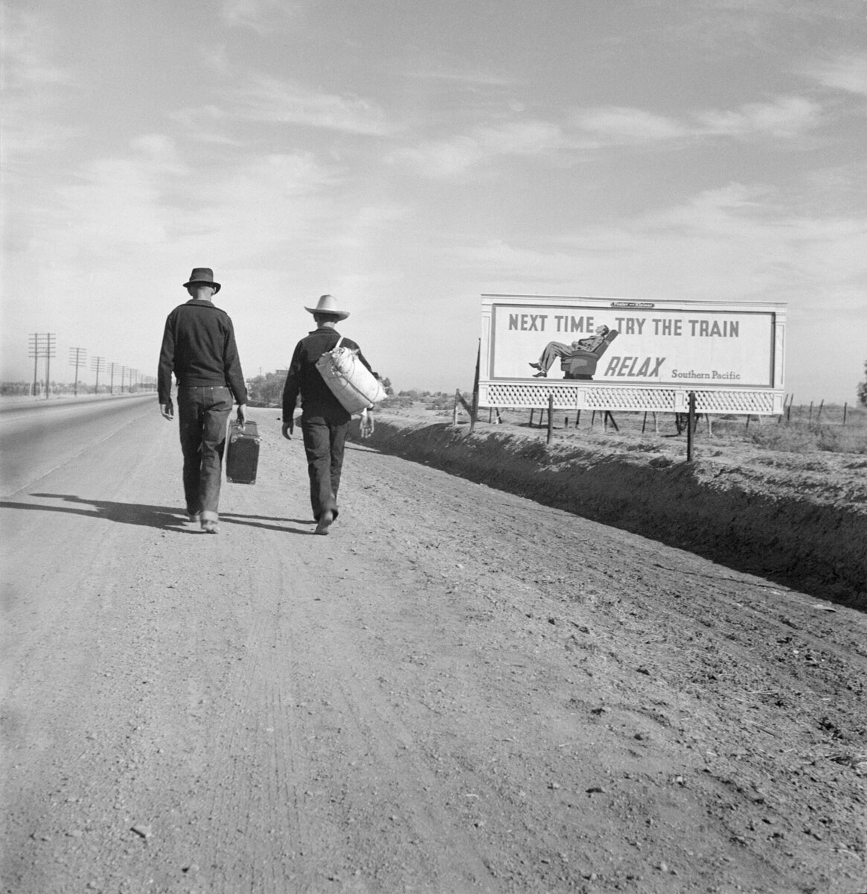

C2 · American History
The American Dream
The phrase was coined in 1931, at the bottom of the Depression, by a man who was explicit that he did not mean money. It has been doing other work ever since.
Play the audio and follow along, then read it again on your own. Tap or hover over a highlighted word to see what it means.
The American Dream is younger than the Ford Model T. The phrase was given its modern currency by James Truslow Adams in 1931, in a popular history written while a quarter of the American workforce was out of a job, and Adams took care to say what he did not mean by it: not a dream of motor cars and high wages, but of a social order in which each person could attain the fullest stature of which they were capable, and be recognized for what they were rather than for the circumstances of their birth.

Two things about that are worth holding on to. The first is that the phrase was coined as an argument, not as a description — an assertion about what the country was for, made at a moment when the evidence was conspicuously against it. The second is that the version Adams explicitly rejected is the version that survived. Within a generation the Dream had become a house, a car and a lawn, which is to say a standard of consumption rather than a standard of recognition.
Taken as a claim about consumption, it had a remarkable run and then stopped. The cleanest measure is absolute mobility: the proportion of children who, by their early thirties, earn more than their parents did at the same age. For Americans born in 1940, that figure is around ninety per cent. For those born in 1980, it is close to half. A coin toss is not a dream, and the collapse is not explained by slower growth alone; a substantial part of it is the change in how the growth was distributed.

Relative mobility — the chance of moving between positions rather than simply exceeding your parents' income — tells a less dramatic but more awkward story. The probability that a child born into the poorest fifth of American families reaches the richest fifth is roughly seven or eight per cent. That number is not catastrophic in isolation. It becomes awkward when set beside Denmark or Canada, where it is nearly twice as high, because the United States is the country whose self-description rests on this particular statistic, and it is not winning on it.
The finding that ought to unsettle everybody, though, is geographical. Mobility varies so widely between American cities that the national figure conceals more than it reveals: a child raised in the bottom fifth in one metropolitan area has several times the chance of reaching the top fifth as an identical child raised in another. Whatever the Dream is, it is not distributed evenly across the country that believes in it, and the variation tracks things — segregation, school quality, family structure, the density of civic institutions — that are matters of policy rather than of national character.
Against all this sits a stubborn fact that no amount of data has dislodged: Americans substantially overestimate how much mobility there is, and have gone on doing so while the figures moved against them. That gap is usually reported as an error to be corrected, which is too quick. A belief about the future is not only a prediction; it is also an instruction about how to behave, and it is at least arguable that a population which overestimates its chances takes more of them. Nobody starts a business on the base rate.
But the same belief does a second job, and it is less attractive. If positions are earned, then the distribution of positions is deserved, and inequality becomes a temporary feature of a fair process rather than a standing question about an unfair one. This is the quiet political utility of the Dream: it converts a structural fact into a personal verdict, and it does so in both directions, which is why the American poor have historically been more likely than their European counterparts to blame themselves. A myth that flatters the winners is ordinary. One that persuades the losers is formidable.
Where this leaves Adams is an open question, and he deserves a fairer hearing than either camp gives him. The thing he actually proposed — recognition independent of birth, a society arranged so that people can become what they are capable of becoming — is not measured by the mobility statistics at all, and it is not obviously refuted by them. It is also not achieved. The honest summary is that the United States is a country with an unusually powerful story about opportunity and an unexceptional record at producing it, and that the gap between those two is not a failure of individual effort but the main thing worth arguing about.
Key Vocabulary
- currency here, general circulation or acceptance of a word or idea
- stature height; by extension, the standing a person achieves
- conspicuously in a way that is obvious and hard to ignore
- an assertion a confident statement made without proof
- consumption the buying and using of goods
- absolute mobility whether children earn more than their parents did
- relative mobility whether children move between income positions
- to exceed to be greater than
- catastrophic disastrous
- in isolation considered on its own, without comparison
- self-description the account a person or country gives of itself
- to unsettle to disturb the confidence of
- to conceal to hide
- metropolitan relating to a large city and its surroundings
- segregation enforced separation of groups, especially by race
- civic relating to the shared life of a community
- stubborn resisting change or removal
- to dislodge to force out of a fixed position
- a base rate the underlying statistical probability of an event
- a verdict a judgment on a person's merit or guilt
- a counterpart a person holding the equivalent position elsewhere
- formidable powerful enough to be feared or respected
- to refute to prove to be false
- unexceptional ordinary; not out of the common run
The American Dream — C2 · American History · Renan the Teacher, English Language Academy · https://renangrossi.github.io/englishclasses/reading/c2/the-american-dream.html
Interactive Exercises
Practice
Complete each exercise, then click Submit to see your score and an explanation for every answer.
Speaking & Writing
Discussion
There are no right answers here — use these to practice speaking, or write a short answer to each.
- The essay argues that overestimating your chances may be useful. Is that a defense of the belief or a criticizm of it?
- "A myth that flatters the winners is ordinary. One that persuades the losers is formidable." Does your country have one of each?
- Adams's version cannot be measured by mobility statistics. Is a claim that resists measurement worth less, or differently?
- If mobility varies that much between cities, what follows for how the Dream should be discussed politically?
- Write about 300 words on a national story about your own country: what it asserts, what the evidence says, and what the story does for people who hold it.